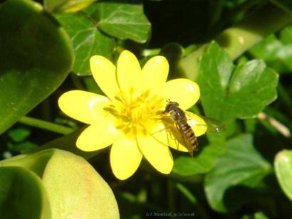
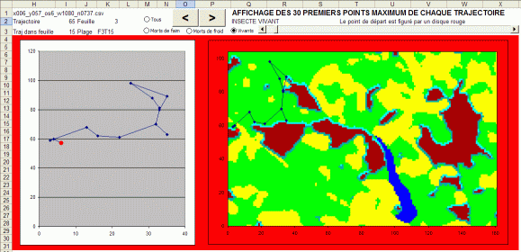
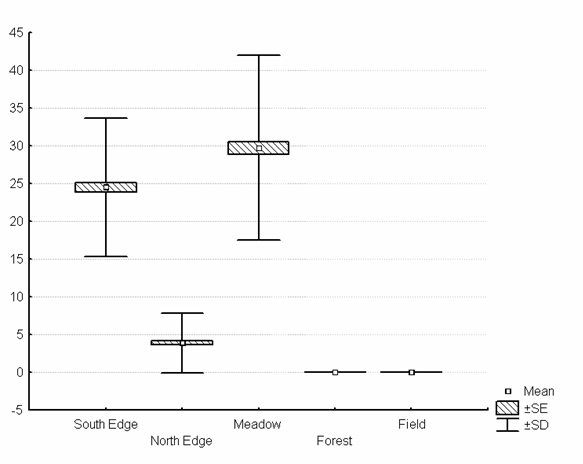
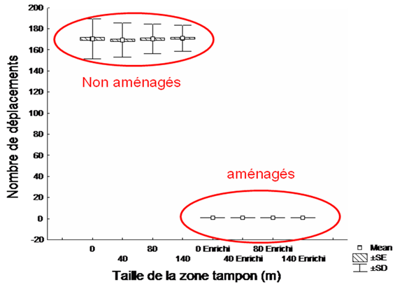

|
Hover-Winter: simulation de la dynamique hivernale
d'un insecte auxiliaire des cultures
Objectifs
 L’objectif du modèle est de comprendre comment une espèce d’insecte auxiliaire des cultures (Episyrphus balteatus, de Geer, 1776 - cf. photo ci-contre, extraite de la BD biogéographique SYRFID sur les espèces de diptères syrphidés en France) utilise les ressources d'un paysage pour passer la saison hivernale, délicate pour l’espèce en termes de résistance au froid et de disponibilité de nourriture. Une des applications du modèle est de tester l'effet de diverses structures paysagères sur la survie de la population à la fin de l’hiver. Cette population survivante exerce en effet un impact sur la prédation des larves de printemps sur les pucerons des céréales.
Contexte et problématique
Une des difficultés en lutte biologique est de pouvoir contrôler les ravageurs des cultures suffisamment tôt pour éviter leur croissance exponentielle. Certains espèces, comme E. balteatus, permettent de réaliser ce contrôle précoce car cette espèce hiverne sous forme de femelles fécondées qui sont à même, lorsqu’elles survivent à l’hiver, de pondre tôt au printemps dans les champs de céréales. En effet, alors que l’adulte est floricole, la larve de cette espèce consomme les pucerons de manière très vorace. Les modalités de l'hivernation des femelles sont cependant mal connues, notamment la détermination de l'importance de la présence de fleurs dont les insectes consomment le nectar et le pollen, et de celle d’abris pour se protéger des températures basses.
Description du modèle
Dans le modèle HOVER-WINTER, dont le nom dérive des termes anglais "Hoverfly" (syrphe) et "Overwinter" (hiverner), chaque insecte est un agent autonome (classe Insect) qui possède un ensemble de règles pour prospecter dans le paysage, se nourrir en fleurs, s’abriter dans les lisières forestières et mourir. Chaque individu est localisé, et se trouve à chaque instant dans une des deux activités suivantes : se nourrir (classe Feed) ou se protéger (classe Protect) (voir diagramme de classes).
A chaque pas de temps, chacune des deux activités peut amener l’individu à se déplacer dans le paysage. Le choix de l’activité se fait en fonction de la température et selon un modèle mathématique de prospection optimale (McNamara & Houston, 1985), adapté pour la première fois à l’échelle du paysage et prenant en compte les expériences passées dans la récolte de ressource (ratio « temps passé / quantité récoltée dans chaque pixel », classe Memory).
Deux classes (Trajectory et TrajectoryElements) permettent de sauvegarder la trajectoire de chaque individu. Un couplage avec Excel permet une visualisation interactive des trajectoires.

La durée de simulation est de 90 jours (hiver) avec un pas de temps de 2 heures (soit 1 080 pas). La résolution d’espace est de 20 mètres (une cellule = 400 m²). La taille totale du paysage est comprise selon les scénarios entre 640 et 670 hectares (soit 16 000 à 17 000 cellules). 2 000 insectes sont introduits au départ de la simulation.
Le modèle utilise en partie des données provenant d’études réalisées dans les coteaux de Gascogne. Les cartes d’entrées ont été obtenues à partir d'un S.I.G. de l'UMR DYNAFOR documentant l’occupation du sol (prairie, culture, lisière forestière sud, lisière forestière nord et centre de forêt).
 Résultats
Les analyses réalisées avec le modèle Hover-Winter à partir d’un paysage observé dans les coteaux de Gascogne confirment nos observations sur le terrain, et particulièrement, l’utilisation préférentielle des lisières forestières orientées au sud par les insectes
(la figure ci-contre montre le taux de visite moyen par individu des différents types d’occupation du sol durant un hiver. La plupart des individus survivants ont visité préférentiellement les lisières sud et les prairies).
L’influence des facteurs climat et ressources dans la dynamique hivernale a été hiérarchisée, avec notamment la prépondérance des évènements climatiques et l’importance de leur durée.
L'intérêt de certains types d’aménagement potentiel du paysage a été analysé par l’étude de scénarios (bandes fleuries à plus ou moins grande distance des lisières), montrant un effet à la fois sur le taux de survie (nette augmentation) mais aussi sur le comportement des individus (cf. figure ci-dessous).

A l’aide du module trajectoire, nous pouvons explorer les possibilités d’analyses spatiales des trajectoires individuelles des insectes pour les relier au modèle mathématique de prospection optimale.
Références
-
Arrignon, F., Deconchat, M., Sarthou, J.P., Balent, G. & Monteil, C., 2007. Modelling the overwintering strategy of a beneficial insect in a heterogeneous landscape using a multi-agent system. Ecological Modelling 205, 423-436. 
-
Arrignon, F., 2006. HOVER-WINTER : un modèle multi-agent pour simuler la dynamique hivernale d'un insecte auxiliaire des cultures (Episyrphus balteatus, Diptera: Syrphidae) dans un paysage hétérogène. Thèse de doctorat de l’Institut National Polytechnique de Toulouse, 222p.
-
McNamara, J. M. and Houston, A. I., 1985. Optimal foraging and learning. Journal of Theoretical Biology 117, 231-249.
Pour en savoir plus, contacter les auteurs.
|
|